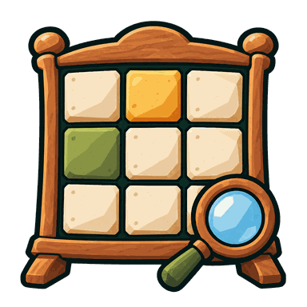
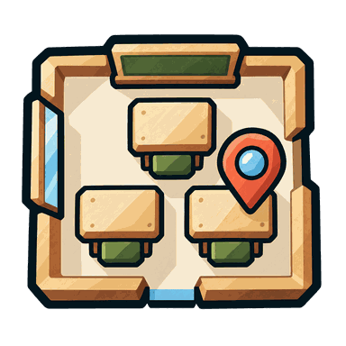
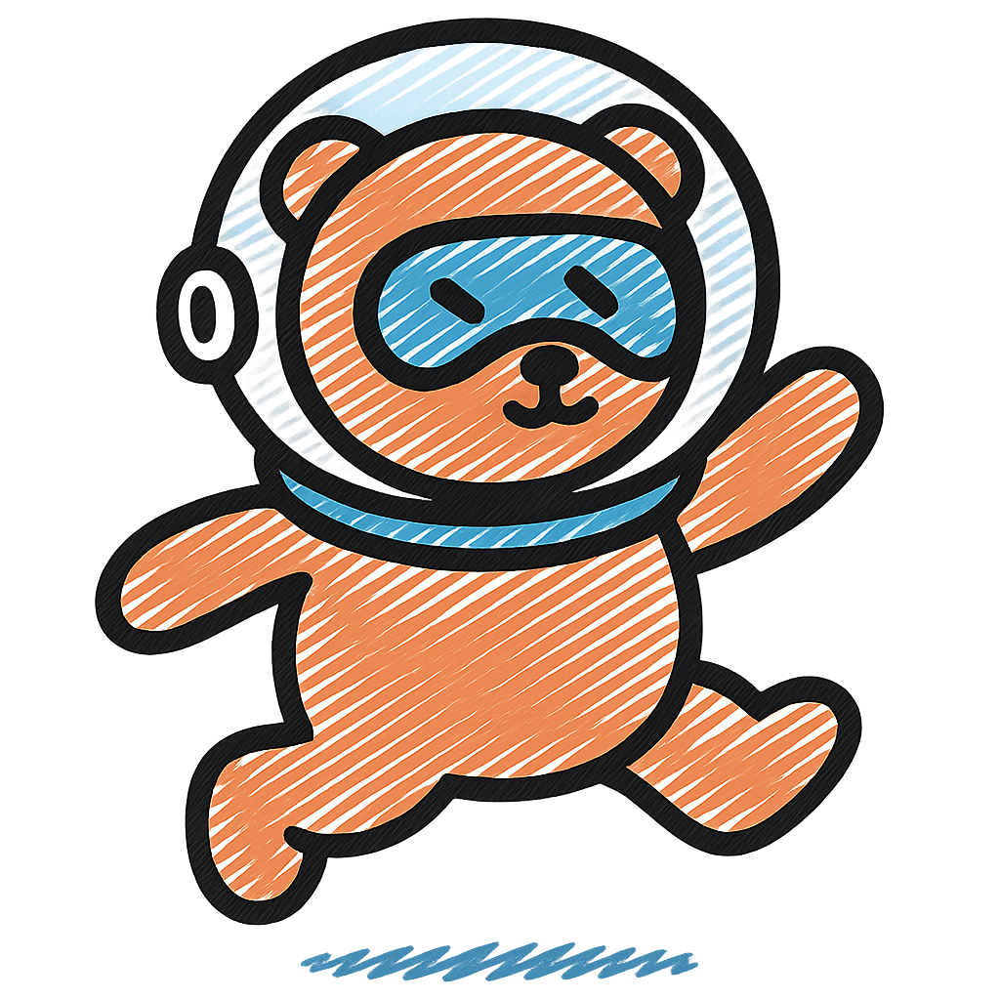

1. Infoskilt
Fire ulike hjørne, trekte 18 px ut og klipte av ramma. Stolpene stikk 40 px ut, med grøn topp og kvar si steinfot i bakken.
Til val, hjelp og støtte.
Spel, verktøy og skaparglede
Lyst tre, svart tekst og samla mørke rammer. Same skilt og knappar på kvar sti — landskapet kan skifte.
01 · Komposisjon
Vel eit oppsett. På smal skjerm blir støtteinformasjon eit trekkspel; viktige handlingar er framleis synlege.

Eitt fembokstavsord kvar dag

Hovudboks
Sjølve oppgåva får den største flata. Mønsteret er tydeleg i kantane og blir svakare mot midten.

Døme: Klassekart
Låg verktøyrad og eigne panel. Lerretet får skjermbreidda, medan introen held seg samla.

Døme: Reknedæsj
Felles ramme, val og resultat rundt ei spelspesifikk flate. Spelgrafikken får behalde funksjonsfargane sine.
Døme på spelrute
02 · Fargar og skrift
Trefarga er grunnflata. Dei andre lyse fargane gjev fleire val for handlingar og grupper. Ramme og skugge har same mørke tone.
Segoe UI i brødtekst og kontrollar. Arial Black i store titlar. Ingen eksterne fontar.
Samla mørk ramme og skugge
Begge: #142820
Tekst: #000000
Funksjon kjem først. Svarstatus, syntaks og brukarvalde fargar har eigne reglar. Tekstetikettar står på lyse flater; ei mørk teiknefarge blir vist i ei brikke ved sida av etiketten.
03 · Handlingar
04 · Flater og dekor
Ramma bind dei saman. Dekor blir brukt etter kva flata skal gjere.
Fire ulike hjørne, trekte 18 px ut og klipte av ramma. Stolpene stikk 40 px ut, med grøn topp og kvar si steinfot i bakken.
Til val, hjelp og støtte.
Lys trefarge. Store, rolege koter i original skala, med ein roleg midte.
Til oppgåver, speloppsett og resultat.
Papirfarge, same ramme og ingen ornament.
Til redigering, lange tekstar og tette lister.
Ein lys tone og ei lettare ramme samlar innhald som høyrer saman.
Til innstillingsgrupper og små kort.
Diskré ramme og mindre luft. Ingen skugge eller stolper.
Til verktøyrader, skjema og eigenskapar.
Ein kort, loddrett skugge kan løfte eit klikkbart kort. Innhaldspanel står vanlegvis utan.
Ein variant av rein flate, ikkje ein sjette familie.
05 · Innhald og støtte
Eit synleg namn gjer samlinga lett å finne att.
Skriv eit namn før du held fram.
Trekkspel sparer plass på mobil og held lengre forklaringar tilgjengelege. Den same komponenten kan brukast på alle sidene.
Her er ekstra tekst for å vise at høgda følgjer innhaldet.
Klart! Status har både ord og ikon.
Fila kunne ikkje opnast. Prøv ei anna fil.
06 · Navigasjon og identitet
Ei lys himmelflate med enkle, kantete skyer frå same uttrykk som landskapa. Stein-Vyrde og namn til venstre; ein treknapp med hamburgersymbol og «Meny» til høgre.
Menyen les appnamn, lenkjer og kategoriar frå den eksisterande appkatalogen. Valde logoar blir viste der dei er klare.
Store, enkle former, mørk kontur og få detaljar. Tre, stein, mose og dei lyse palettfargane bind logoane til Vyrde. Kvar app får sitt eige attkjennelege motiv; namnet står ved sida av biletet.
Dei synlege appene har no kvar si logo i Måla flater-familien. Same materialkjensle, mørke kontur og lyse palett bind dei saman; motivet gjer kvar app lett å kjenne att.
Logoar for skjulte appar blir laga når dei blir tekne fram for migrering.